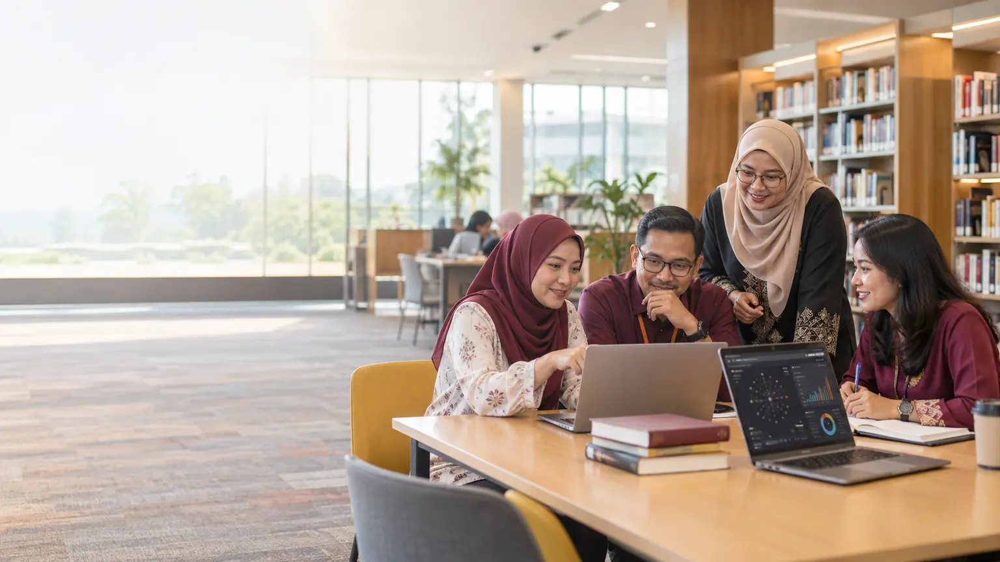
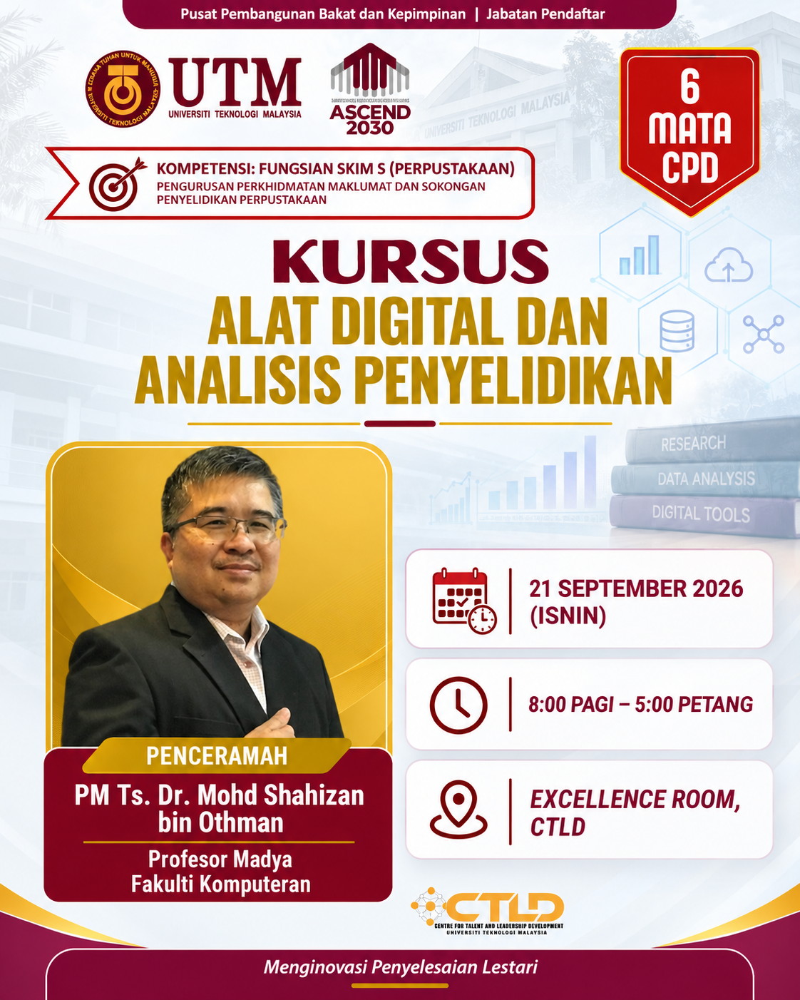

⌕
Temui
Cari, tapis dan nilai literatur serta maklumat sitasi dengan lebih teratur.
Pelajari aliran kerja digital yang praktikal, sistematik dan beretika. Pembelajaran merangkumi carian literatur, analisis, visualisasi dan pelaporan.

Portal pembelajaran ini membantu peserta memilih dan menggunakan alat yang tepat sepanjang kitaran penyelidikan. Kandungannya bermula dengan pengurusan literatur dan berakhir dengan penyampaian dapatan yang jelas.
Cari, tapis dan nilai literatur serta maklumat sitasi dengan lebih teratur.
Bina peta bibliometrik, bersihkan data dan kenal pasti corak penting.
Ubah hasil analisis menjadi visual dan laporan yang mudah difahami.
Tujuh modul disusun sebagai satu aliran kerja lengkap. Pembelajaran bermula dengan pemilihan alat dan pengurusan literatur, kemudian diteruskan dengan analisis, visualisasi dan penggunaan AI secara beretika.
Pilih alat berdasarkan objektif dan bentuk aliran kerja penyelidikan.
Buka modul →Teroka topik, cari sumber dan urus koleksi rujukan secara sistematik.
Buka modul →Teroka jaringan pengarang, dokumen dan kata kunci.
Buka modul →Bersihkan, ringkaskan dan tafsir data penyelidikan.
Buka modul →Urus petikan, kod, kategori, tema dan memo analitik.
Buka modul →Pilih visual yang tepat dan sampaikan dapatan dengan jelas.
Buka modul →Gunakan AI berasaskan sumber dengan semakan manusia dan etika.
Buka modul →
Profesor Madya, Fakulti Komputeran
Universiti Teknologi Malaysia
Perkongsian berfokuskan latihan praktikal, pemilihan alat yang sesuai dan penghasilan output yang boleh terus digunakan dalam tugasan penyelidikan.
Alat yang tepat memudahkan kerja. Pertimbangan manusia memastikan hasilnya tepat dan bertanggungjawab.
{kind=link}